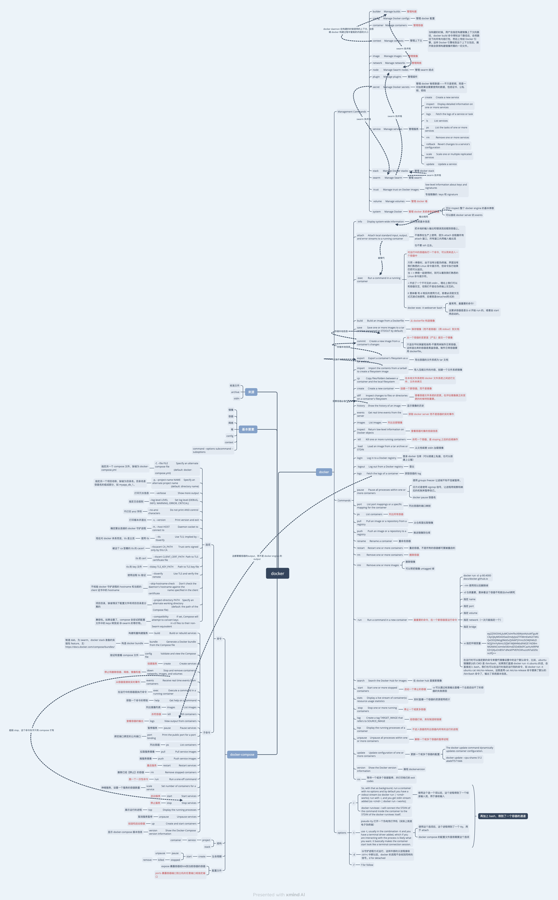

Docker 命令与场景
常用命令
1 | |

docker.xmind
All articles on this blog are licensed under CC BY-NC-SA 4.0 unless otherwise stated.
Related Articles

2017-10-31
把 Unix 的 Domain Socket 转成可本地访问的 TCP 端口
使用管道命令的做法： 1socat -d TCP-LISTEN:2376,range=127.0.0.1/32,reuseaddr,fork UNIX:/var/run/docker.sock 简洁的做法（使用守护进程而不是使用管道命令） 1docker run -d -v /var/run/docker.sock:/var/run/docker.sock -p 127.0.0.1:2375:2375 bobrik/socat TCP-LISTEN:2375,fork UNIX-CONNECT:/var/run/docker.sock 从容器内往外看的主机，对应外部主机就是 127.0.0.1的端口 ping docker.for.mac.localhost 通常结果是192.168.65.1。 值得参考的文： http://brieflyx.me/2015/linux-tools/socat-introduction/

2017-11-01
Docker 的 Volume
为什么要有数据卷 Docker镜像是由多个文件系统（只读层）叠加而成。当我们启动一个容器的时候，Docker会加载只读镜像层并在其上（译者注：镜像栈顶部）添加一个读写层。如果运行中的容器修改了现有的一个已经存在的文件，那该文件将会从读写层下面的只读层复制到读写层，该文件的只读版本仍然存在，只是已经被读写层中该文件的副本所隐藏。当删除Docker容器，并通过该镜像重新启动时，之前的更改将会丢失。在Docker中，只读层及在顶部的读写层的组合被称为Union File System（联合文件系统）。 换言之，删除容器的时候要记得顺便删除数据卷，例如： 1234# 删除全部容器连带的数据卷docker ps -aq | xargs docker rm -f -v# 删除遗留而不用的容器docker volume prune Volume 必须在容器初始化时就创建，也就意味着，只能在 docker run 或者 Dockerfile 里面指定数据卷。 $ docker run -it --name container-test -h CONTAINER -v /data d...

2017-11-17
CMD 与 ENTRYPOINT
CMD 与 ENTRYPOINT 都是为了让容器工作得像可执行文件一样，接受参数，产生特定的输出存在的–容器命令化工具。如果没有这些工具，那么docker run -it abc:v0.0.1 /bin/bash 的最后一个参数就会变成启动命令。如果有CMD，它的命令也会被 docker run 结尾的参数命令锁覆盖，原本的命令不会作为 startup command 执行;如果有 ENTRYPOINT，docker run 结尾的参数命令会作为 ENTRYPOINT 的命令执行; CMD 还可以为 ENTRYPOINT 提供参数。 比较奇怪的地方是,如果使用了非 /bin/bash 的 startup command，docker run 的时候就不能 /bin/bash 进去了。 一个容器最好只有一个 CMD，一个 ENTRYPOINT。子容器的 CMD 会覆盖父容器的 CMD。 CMD 可以为 ENTRYPOINT 提供参数。 他们都有 exec 和 SHELL 两种工作模式。 例如以下的例子，可以用 docker run -it d8c80106de01 tty 接管上去...

2017-12-10
Docker 小笔记
记录一些特别容易遗忘的 Docker 知识细节 镜像实际上是文件夹，每个镜像命令会产生出单独的一层。我们删除文件不一定能够删得掉，可删除的文件也只是在联合文件系统里面增加一个“被删除层”。 容器像是集装箱。这通常是启动内部代理的一个方法。docker 寻求的解决方案不是虚拟化，而是进程间的软隔离。 123456# 启动 docker 容器docker run -d -p 2222:22 --name 容器名 镜像名# -d 守护容器，就是后台运行，退出命令窗口容器也不会停止# -it 交互式容器 退出命令窗口容器就停止运行了# -p 宿主机端口和容器端口映射# 8081:80 宿主机端口: 容器公开的端口 Docker 同hypervisor的区别是，hypervisor总是起了多个内核。实际上阿里开源的容器技术 pouch，也是基于多 hypervisor 的。 docker inspect 既可以查看容器，也可以查看镜像。用以下的命令单独查看一个属性： 1docker inspect -f '{{.NetworkSettings...

2018-09-07
Docker 与网络
docker 操纵网络是无形的，它通过修改路由规则来让某些包在特定的 network 里面流动。在 Linux 下，它是通过操纵 iptables 来做到这件事的(windows下通过其他机制)。 docker 驱动 docker 的网络是可插拔的，因为使用了驱动。默认就自动携带的驱动是: bridge 默认的网络驱动。 当所有的容器都在一个宿主机的时候，应该使用这个驱动。 在计算机网络的范畴里，一个桥接网络是一个链路层设备，转发网络片段。一个桥可以一个硬件设备或者宿主机内核里的软件设备。 在 Docker的范畴里，桥接网络使用一个软件桥来让容器连在同一座桥上，通过桥通信。同一个宿主机里，不同桥网络是不能相互通信的（实际上不同的网络就不应该彼此通信）。 启动 docker 的时候，一个默认的桥接网络就被创建了。如果没有其他网络被创建，则默认大家都使用这个网络。所有新创建的容器，都会自动在这个名称为 bridge 网络里互连。用户也可以创建自定义的桥接网络，自定义的桥接网络拥有更高的优先级。 自定义网络的优势 用户自定义网络在容器化应用程序里，提供了更好的隔离和互操作性。在同一个...

2018-09-21
Docker 与存储
写在前面的话 容器的默认状态难以从容器中搬运出来。 容器的默认状态是基于联合文件系统的，也就是需要存储驱动的支持，效率会比直接写到宿主机文件系统里要差一点。 所以此处 storage driver，就正对应 network driver 了。 把数据写入到宿主机上的方法有：volumes 和 bind mounts。如果在 linux 上，还有 tmpfs mount。注意，这些东西不是 storage driver。 他们之间的关系是： 在操作系统和 docker 层面，可以认为 volumes 是有实际存储的设备（虽然被虚拟化）的抽象（在 k8s 抽象里是 volumeMounts），而 mount 是带有 path 的一个挂载点（在 k8s 抽象里是 mountPath）。 Volumes 在宿主机文件系统上，Volumes 使用一块专属的路径来存储 docker 文件，如/var/lib/docker/volumes/，其他进程不应该碰这些文件。 Volumes 是 Docker 持久化数据最佳的选择。 常见创造数据卷的方法 只能迟至容器创建时把一个数据卷和容器关联起...